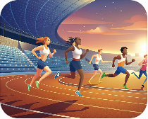
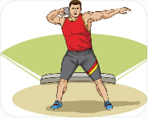
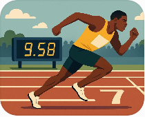
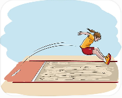

Was ist das Deutsche Sportabzeichen?
Sport ist wichtig für unsere Gesundheit. Aber wie kann man feststellen, wie fit ein Mensch ist? Wie kann man seine sportliche Leistung messen? Eine Möglichkeit ist das Deutsche Sportabzeichen. Es ist eine Auszeichnung für Menschen, die in verschiedenen Sportarten gute Leistungen zeigen. Man kann es in Bronze, Silber oder Gold erhalten. Dabei zählen Ausdauer, Geschwindigkeit, Kraft und Koordination.
Welche Anforderungen muss man erfüllen?
Man muss in vier Bereichen jeweils eine Leistung zeigen. Diese Bereiche sind:

Man muss zeigen, dass man sich längere Zeit körperlich anstrengen kann, zum Beispiel beim 3000-Meter-Lauf, Schwimmen oder Radfahren.

Hier wird die körperliche Stärke geprüft, zum Beispiel beim Kugelstoßen oder Standweitsprung.

Hier kommt es auf die Geschwindigkeit an, zum Beispiel beim 100-Meter-Lauf oder beim kurzen Schwimmen.

Man muss zeigen, dass man seine Bewegungen gut kontrollieren kann, zum Beispiel beim Weitsprung oder Seilspringen.
In jedem Bereich wählt man eine Übung. Außerdem muss man nachweisen, dass man schwimmen kann. Wer in allen vier Bereichen mindestens die Anforderungen für Bronze erfüllt, bekommt das Sportabzeichen in Bronze. Für Silber oder Gold braucht man bessere Ergebnisse.
Wie wird die Leistung gemessen?
Beim Laufen und Schwimmen wird die Zeit gemessen. Beim Springen und Werfen misst man die Entfernung oder Höhe. Die Anforderungen hängen vom Alter und vom Geschlecht ab. Männer und Frauen machen oft ähnliche Übungen, müssen aber nicht dieselben Ergebnisse erreichen.
Wie oft muss man das Sportabzeichen machen?
Man kann das Deutsche Sportabzeichen einmal pro Kalenderjahr erwerben. Eine jährliche Wiederholung ist freiwillig. Bei der Bundeswehr müssen Soldaten regelmäßig ihre körperliche Fitness nachweisen, zum Beispiel beim Basis-Fitness-Test (BFT). Das Deutsche Sportabzeichen selbst ist heute keine Pflichtleistung für das Leistungsabzeichen der Bundeswehr.
Welche Folgen hat es, wenn man die Anforderungen nicht erfüllt?
Wer die Anforderungen des Sportabzeichens nicht erfüllt, bekommt zunächst kein Abzeichen. Man kann weiter trainieren und die Prüfung später wiederholen. Wenn ein Soldat einen vorgeschriebenen Fitnesstest nicht besteht, kann zusätzliches Training und eine Wiederholung nötig sein. Wiederholt schlechte Ergebnisse können bei der Beurteilung seiner körperlichen Leistungsfähigkeit eine Rolle spielen. Die genauen Folgen hängen vom Einzelfall und den Vorschriften ab.
Sind die Anforderungen leichter geworden?
Die Regeln und Übungen haben sich im Laufe der Jahre verändert. Einige Übungen wurden ersetzt oder ergänzt. Das bedeutet aber nicht, dass alle Anforderungen heruntergesetzt wurden. Manche Übungen sind leichter geworden, andere bleiben anspruchsvoll.
Warum ist die Einstellung wichtig?
Nicht jeder Mensch ist gleich sportlich. Wichtig ist auch die persönliche Einstellung zum Sport. Wer regelmäßig trainiert, geduldig bleibt und nicht aufgibt, kann seine Leistung verbessern. Besonders für Soldaten ist körperliche Fitness wichtig, weil sie manchmal schwere Ausrüstung tragen oder lange Strecken zurücklegen müssen.
Übung 1 – Wortschatz
Ordnen Sie jeder Erklärung den richtigen Begriff zu. Wählen Sie den passenden Begriff im Dropdown-Menü.
Wortliste (bleibt beim Scrollen sichtbar)
Übung 2 – Richtig oder falsch?
Lesen Sie die Aussagen. Wählen Sie Richtig oder Falsch.
Übung 3 – Multiple Choice
Welche Antwort ist richtig? Wählen Sie A, B oder C.
Übung 4 – Diskussion
Diskutieren Sie die Fragen. Begründen Sie Ihre Meinung und nennen Sie Beispiele.
- Finden Sie unterschiedliche Anforderungen für Männer und Frauen gerecht? Begründen Sie Ihre Meinung.
- Sollten Soldaten höhere sportliche Anforderungen erfüllen als andere Menschen?
- Welche Folgen sollte es haben, wenn ein Soldat einen vorgeschriebenen Fitnesstest mehrmals nicht besteht?
- Was ist wichtiger: Kraft, Ausdauer, Geschwindigkeit oder die Einstellung zum Sport?
- Sollten sportliche Anforderungen mit zunehmendem Alter leichter werden?
Redemittel
Ich bin der Meinung, dass … · Ich finde es gerecht/ungerecht, dass … · Da stimme ich Ihnen zu. · Das sehe ich anders. · Einerseits …, andererseits …
Disziplinen: Wikipedia – Deutsches Sportabzeichen